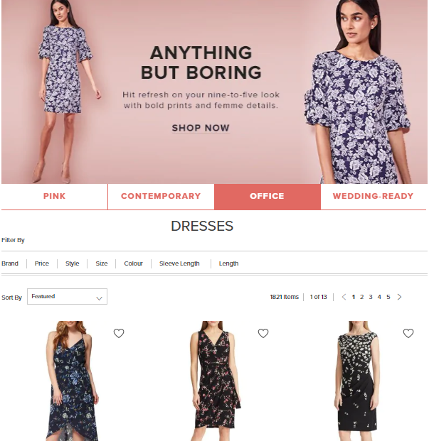
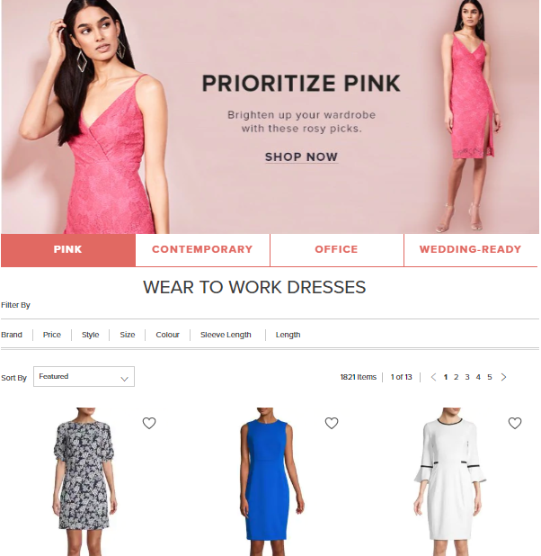
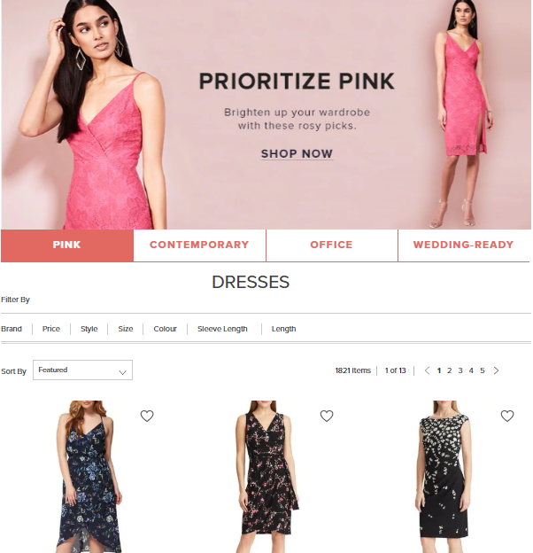
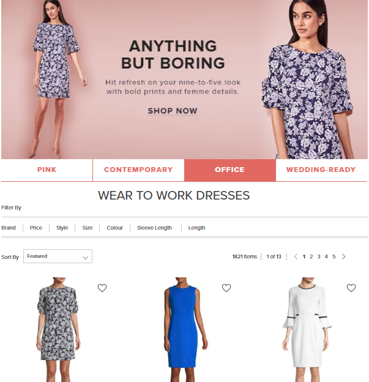

Anticipated Click-Through from Marketing Content
Challenge
Marketing editorials are an important tool for storytelling. In this instance, a dresses editorial has been designed as a carousel, allowing users to preview marketing content prior to interaction with the call to action. However, once the page refreshes after having interacted with content, the first slide from the carousel will display by default. Upon landing, a user’s view of the marketing they had just clicked would be obscured causing some feedback where users felt as though the banner they were interacting with was "broken."
User interaction with banner:
Default appearance after page refresh:
Goals
The goal of this research was to identify the extent of users that would expect to see relevant marketing content after they have landed on a new product array.
Research
Preference testing survey was created through Google Forms and sent to potential participants through an email distribution list.
Participants
30 Hudson’s Bay employee responses were collected from the distributed survey.
Methodology
A survey was sent out with the following steps:
- Imagine you are shopping for a dress to wear to work on thebay.com and you are navigating exclusively through marketing content
- After selecting the “Office” option and reading the content, you click “Shop Now” and the page refreshes
- Given the two options, which landing page would you expect to see upon refresh?

Option A:
Option B:
Results
Almost all users who interacted with marketing banners prior to click-through also expected to see corresponding content above relevant product array (Option B).
Impact
Due to limitations in web functionality, no updates or improvements were able to be made to this particular carousel template. However, the main findings that users would expect to see marketing content that “matched” with what they had last interacted with was taken into account for new template design. This has led to successful collaboration efforts between the site merchandising and front-end development team to create a “snap to” functionality within marketing URLs by targeting areas of content through URLs. This has expanded marketing strategies to drive traffic to the same editorial with multiple click-through strategies (depending on target audience).
Reflections
Even though research results did not lead to an adjustment of that particular template under study, the research did help to create a paradigm shift within internal strategy planners. Carousel-style marketing banners are still used but are being phased out as each iteration of content is more focused on user experience with the editorial.
Limitations
Although the results of this study were overwhelmingly conclusive, the data was not generated from a behavioural test. Limitations of this test were rooted in the attitudinal nature of the survey where users were not actually observed interacting with the marketing content. This could potentially have confounded results because there is a chance users may think they would behave differently than they actually would. As well, the participant pool was made up of internal employees which could have also led to biased results.
Learnings
Survey research for going forward should at least include non-internal partipants. Further observational research may also need to be done in order to confirm preferential findings.